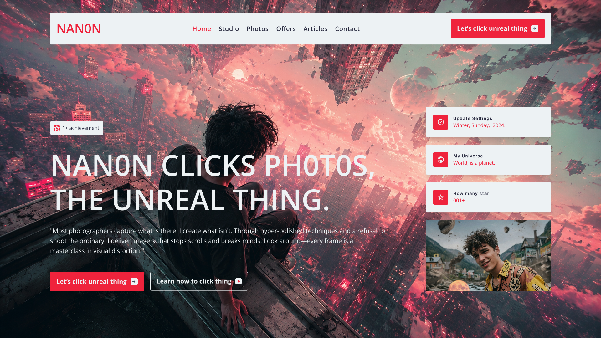
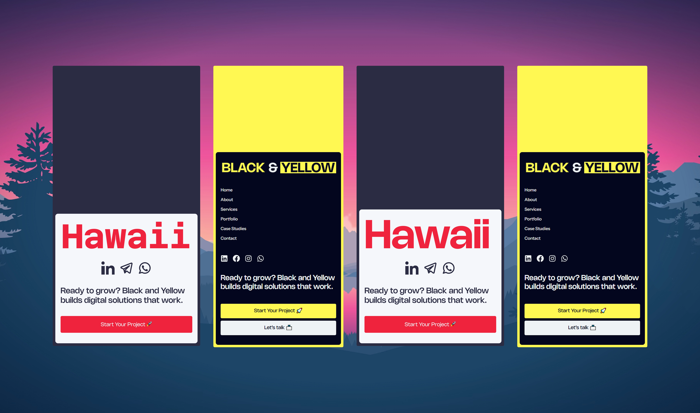

Articles & Technical Insights
Deep dives into Django backend architecture, Figma design systems, frontend engineering, and AI-assisted workflows.

Scalable Django Architecture: Best Practices for High-Performance Backends
A comprehensive guide on structuring Django applications, optimizing ORM database queries, managing asynchronous task queues, and building robust RESTful APIs.

Building Production-Ready Design Systems in Figma
Learn how to organize Figma component libraries, construct flexible auto-layout structures, define token variables, and streamline handoff to frontend engineers.
Integrating AI Tools into Modern Frontend Workflows
How autonomous AI coding assistants, automated accessibility testing, and generative UI tools elevate design-to-code velocity without sacrificing code quality.

Mastering Native CSS Light-Dark Primitives & Token Systems
Discover how to architect clean, framework-free stylesheets using native light-dark primitives, responsive spatial grids, and zero-dependency component design.